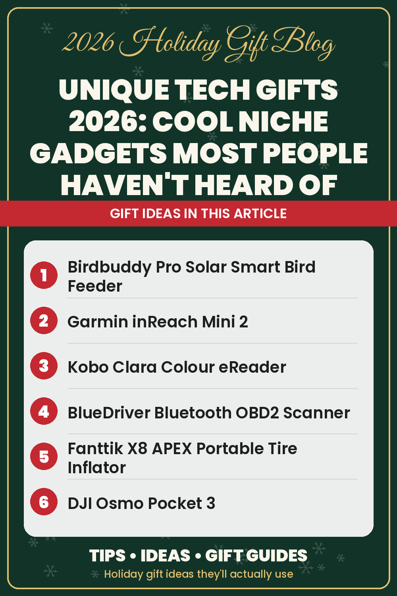

Unique Tech Gifts 2026: Cool Niche Gadgets Most People Haven't Heard Of

Every year the same tech gifts show up under the tree: earbuds, a smartwatch, maybe a new tablet. They're good gifts, but they rarely get a "wait, what is that?" reaction. If you're shopping for someone who loves gadgets and already owns the obvious ones, the fun is in finding the niche stuff: clever devices built for one job, from brands most people haven't heard of.
This guide rounds up unique tech gifts for 2026 that fly under the radar. Each one is a real product on Amazon, and each solves a specific problem in a way that feels a little bit like magic the first time you use it. For the mainstream picks, see our cool tech gadgets guide, and if you're on a budget, our tech gadget gifts under $50.
How to pick a niche gadget they'll actually use
Niche gadgets have one risk: novelty wears off. A few rules help you avoid buying a drawer-filler:
- Match a hobby, not a trend. The best niche gift plugs into something they already do: birdwatching, road trips, hiking, reading or making videos.
- Solve a real annoyance. A gadget that removes a small, repeated hassle gets used for years.
- Check compatibility. Some devices rely on an app or a subscription. Read the product page so there are no surprises on Christmas morning.
- Include a gift receipt. Gadget lovers often have strong opinions about ecosystems.
For the backyard naturalist: a smart bird feeder
The Birdbuddy Pro Solar Smart Bird Feeder is designed to capture visiting birds on camera and send them to your phone. It's the kind of gift that turns a quiet window into a daily show, and it works for kids, grandparents and anyone with a yard. It's a favorite from our cool tech gadgets guide precisely because most people have never seen one.
For the hiker who goes off-grid: a satellite communicator
Most people don't realize you can carry a pocket-size satellite messenger. The Garmin inReach Mini 2 is a compact satellite communicator built for areas without cell coverage, so hikers, hunters and backcountry campers can stay in touch. Note that satellite service requires a subscription plan. Browse more trail-ready ideas in our outdoor, camping and hiking gifts guide.
For the reader who wants something different: a color eReader
Everyone knows the Kindle, but fewer people know about Kobo. The Kobo Clara Colour eReader is a compact eReader with a color E Ink screen, which makes book covers, comics and highlights feel more lively. For more bookish ideas, from book lights to book nooks, see our gifts for book lovers guide.
For the car person: a Bluetooth OBD2 scanner and a smart tire inflator
When the check-engine light comes on, most drivers just worry. Car enthusiasts plug in a scanner. The BlueDriver Bluetooth OBD2 Scanner connects to a car's diagnostic port and pairs with a phone app to read trouble codes. It's a gift that can pay for itself the first time it saves a trip to the shop.
Pair it with the Fanttik X8 APEX Portable Tire Inflator #ad, a cordless, rechargeable inflator that's small enough to live in a glove box. Instead of hunting for a gas station air pump, they can top off tires in the driveway. (Product credit: Fanttik.) Our gifts for car lovers guide has dash cams, jump starters and more.
For the creator: tiny cameras that do big things
Two cameras most casual shoppers have never heard of are huge with video makers:
- The DJI Osmo Pocket 3 is a pocket-size vlogging camera with a built-in gimbal for smooth handheld footage.
- The Insta360 X5 is a 360° action camera that records everything around it, so you can choose your framing later.
For anyone who streams or takes video calls, an Elgato Key Light is a studio light designed for desks, and the Focusrite Scarlett Solo audio interface is a classic first step into home recording. See all of them in our gifts for photographers and creators guide.
For the desk setup nerd: a mechanical keyboard
If they type all day on a flat laptop keyboard, a mechanical keyboard is a surprisingly personal upgrade. Keychron is a favorite among keyboard enthusiasts, and the Keychron K2 is its popular compact wireless mechanical keyboard, which works with both Mac and Windows. You can find it on Amazon or directly from Keychron's site. Gamers might also enjoy picks from our gifts for gamers guide.
For the home tinkerer: kitchen and home gadgets with a twist
- The MEATER Pro Smart Meat Thermometer is a wireless probe that stays in the meat while it cooks and reports to an app, a fun upgrade for anyone who grills.
- The Aarke Carbonator 3 makes sparkling water at home and looks good on a counter.
- The Hatch Restore 3 Sunrise Alarm is a sunrise alarm and sound machine for people who hate harsh alarm sounds.
For the person who wants the future now
Some gadgets feel like science fiction that quietly arrived. Ray-Ban Meta (Gen 2) Smart Glasses blend classic frames with a camera, audio and an assistant. The Oura Ring 4 is a smart ring that tracks sleep and activity without a screen on the wrist. And the XGIMI MoGo 2 Pro Mini Projector is a portable projector that turns a bedroom wall into a movie night. Bigger splurges live in our big-ticket tech gifts guide.
Quick picks by budget
- Under $50: browse the tech gadget gifts under $50 guide for stocking-friendly picks.
- Mid-range: a smart bird feeder, OBD2 scanner, tire inflator, color eReader or mechanical keyboard.
- Over $200: smart glasses, a 360° camera or a smart ring. Our best tech gifts by budget article breaks this down further.
The bottom line
The best unique tech gifts aren't the flashiest. They're the ones that fit a hobby so well that the recipient wonders how they lived without them. Pick the passion first, the gadget second, and you'll give something they've never seen before. For more ideas, browse the whole Tech category.
As an Amazon Associate I earn from qualifying purchases. Links to Amazon on this page are affiliate links; prices and availability change often, so check Amazon for current details.